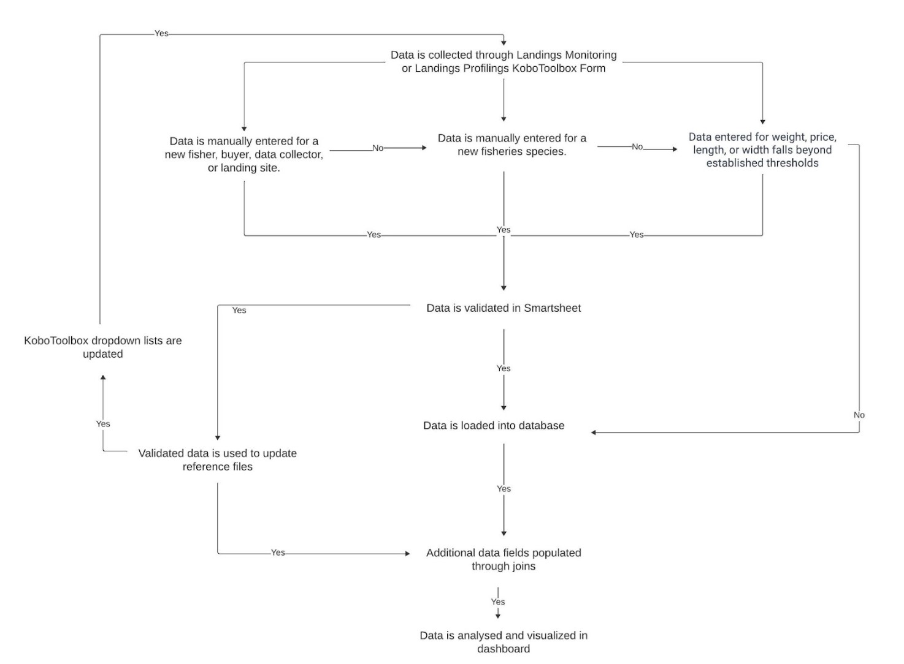
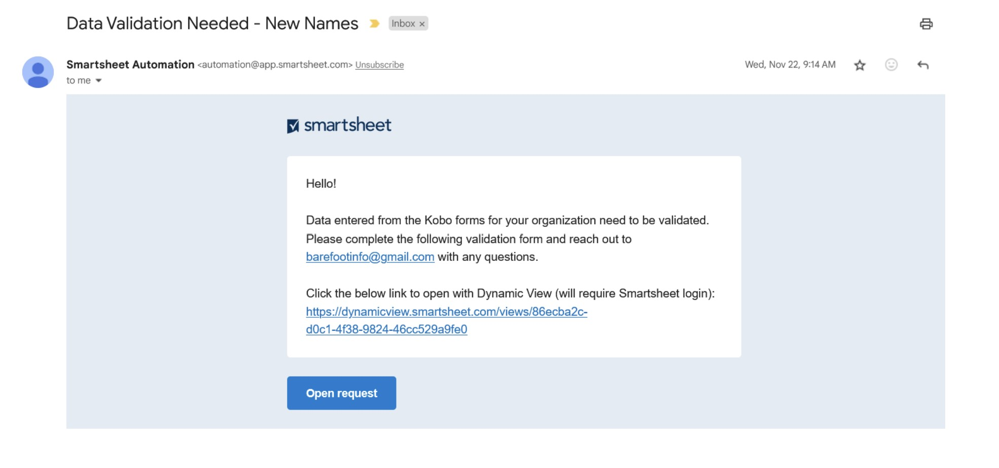
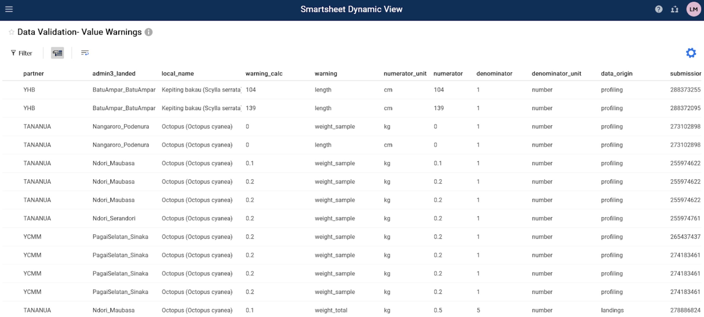
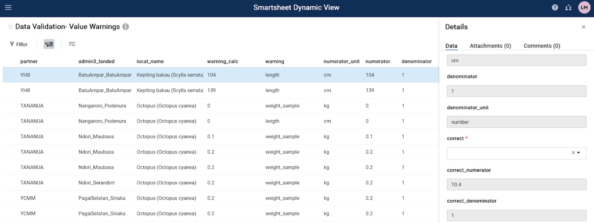
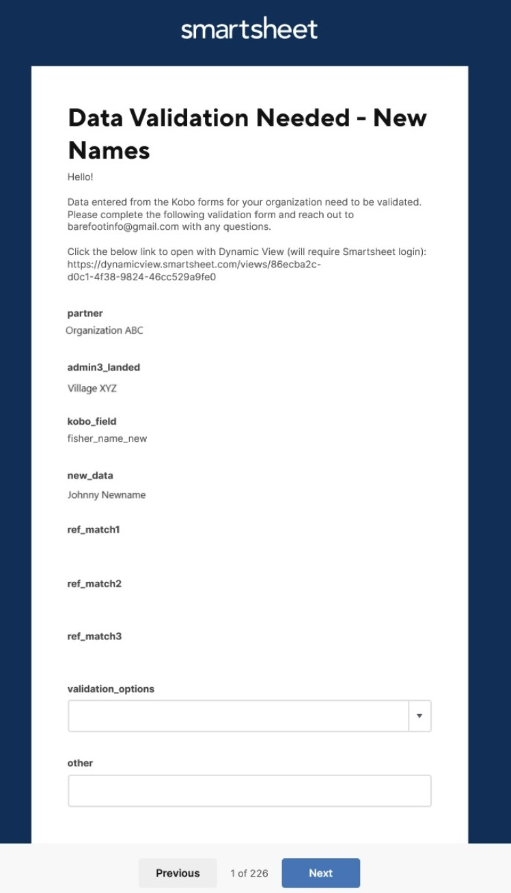
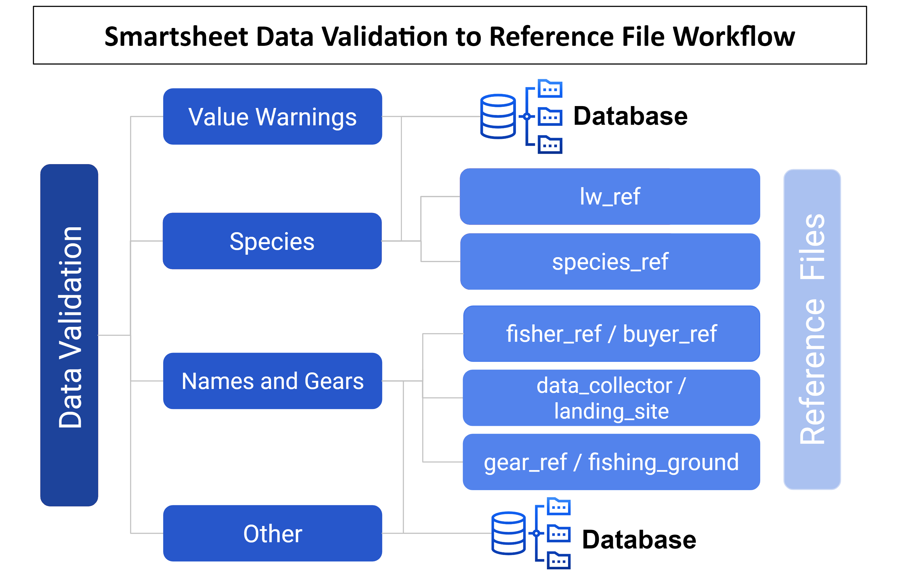

Data Validation
Matadalan ba Validasaun Dadus Peskas.
Dadus hotu-hotu ne’ebé suli liu husi sistema dadus peska nian hetan validasaun iha Smartsheet. Dadus haruka ba validasaun iha senáriu tolu nia laran; 1) naran foun ka informasaun seluk aumenta manualmente iha Kobo Kollect, 2) valór numeriku ida monu liu husi limite ne’ebé estabelese ona ka 3) naran iha dataset la iha korresponde iha arkivu referénsia ida. Bainhira hetan validasaun dadus, dadus iha baze dadus no tabela referénsia sira atualiza tiha ona. Tabela referénsia serve hanesan inputs ba lista dropdown iha formuláriu KoboToolbox no kontein dadus ne’ebé aumenta ba datasets liu husi konjuntu. Haree ai-huun desizaun iha kraik (Figura 1).
Dadus ne’ebé hamosu ba validasaun haruka ba tabela haat ida: 1) Naran no Gears, 2) Avizu Valor, 3) Espesias ka 4) Seluk tan. Instrusaun sira iha kraik detallu kona-ba prosesu validasaun dadus iha Smartsheet Dynamic View ba tabela validasaun haat. Tabela validasaun ida-idak sei rekere ka hili valór kampu ne’ebé loos husi lista dropdown ka hatama valór ne’ebé loos manualmente. Prosesu ne’e sei aplika ba nesesidade validasaun dadus iha futuru, tuir nesesidade.
Tabela validasaun Naran no Gears nian iha dadus foun husi peskiza Kobo nian hotu inklui naran foun husi peskadór sira, sosa-nain sira, koletor dadus, baze peska, fatin ba rai no sasán sira. “Avizu Valor” iha informasaun númeru ne’ebé halibur husi Peskiza kona-ba Monitorizasaun Rai ka Rai ne’ebé marka valór presu, todan ka naruk bazeia ba limite ne’ebé estabelese ona. Pre-estabelese ona kuadru ba avizu todan no naruk mai husi lw_ref; no avizu presu mai husi min_max_ref. Tabela validasaun Espesial iha foto no naran lokál foun hosi peskiza hotu-hotu atu omologa espésie foun sira ho prosesu verifikasaun dupla. Ikusliu, tabela validasaun dadus seluk ne’e inklui informasaun seluk ne’ebé halibur husi Peskiza Profiling Landing, Profiling Komunidade ka Uma-kain no hetan validasaun barak liu ba objetivu tradusaun.
Mensajen e-mail loroloron nian haruka ho informasaun no ligasaun kona-ba oinsá atu kompleta validasaun dadus (haree instrusaun detalladu iha kraik). Notifikasaun adisionál husi Smartsheet bele haruka liuhusi email hodi halo akompañamentu ho selesaun validasaun dadus ne’ebé la kompletu, se presiza.
Pasu 1: Fornese pontu kontaktu, naran no diresaun e-mail ba sira ne’ebé responsavel ba validasaun dadus.
Organizasaun jere parseiru oin-oin bele fornese informasaun kontaktu hotu-hotu.
Parseiru individuál sira bele fornese informasaun kontaktu.
Pontu kontaktu sei simu notifikasaun validasaun dadus liuhosi email.
Pasu 2: Haree Ita-nia e-mail atu hetan pedidu validasaun dadus.
Ita sei simu e-mail husi “Smartsheet automation” (Figura 2)
E-mail ne’e sei iha ligasaun hodi halo validasaun liu husi “Vizaun Diamika” ka “Open Request.” Vizaun dinámika mak formatu tabela no pedidu nakloke sei dirije ita-boot sira ba formuláriu validasaun.
Atu loke ho “Dynamic View” (Step 3, Opsaun A), klike iha link ne’ebé hahú ho “https://dynamicview.smarthseet.com.
Atu loke formuláriu pedidu atualizasaun (Pasu 3, Opsaun B), klike iha knotak “Open request”
Prevee kona-ba informasaun sira ne’ebé presiza hetan validasaun sei hatudu iha mensajen ida-ne’e nia okos, maibé ita sei la bele omologa dadus ruma diretamente iha email
Iha e-mail nia okos, iha ligasaun ba “Ba iha surat-tahan”; maibé, surat-tahan ne’e limitadu ona. Favór ida haree fali ita-nia validasaun dadus liu husi vizaun dinámika, pedidu nakloke, ka relatóriu espesífiku parseiru nian.
Figura 1: Ai-huun desizaun validasaun dadus.

Figura 2: Ezemplu

Pasu 3, Opsaun A: Kompleta Ita-nia validasaun dadus liu husi Vizaun dinámika (rekomenda)
Atu hetan opsaun ida-ne’e, ita presiza kria konta ne’ebé livre. Imi sei hetan diresaun husi e-mail atu halo konta.
Klike iha link Vizaun dinámika iha pedidu e-mail.
Janela navegador internét foun sei loke ho setup hanesan meza ba tama hotu. Iha ne’e, fasil atu hakerek informasaun hotu ne’ebé presiza validasaun.
Klike iha liña atu hahú validasaun.
Painél “Detallu” sei hatudu iha liman-loos.
Halo revizaun ba kampu kontestu no halo kampu validasaun. Kampu validasaun sira-ne’e inklui dadus ne’ebé sei transfere ba data finál (Tabela 1).
Husik komentáriu ida, só de’it se iha buat ruma ne’ebé presiza ita-nia atensaun. Funsionarius Blue Ventures (BV) sei halo revizaun ba komentáriu no hatán ho apropriadu.
Klike iha knotak “Salva” kor-azul atu salva ita-nia selesaun.
Bainhira ita hetan ona validasaun, ita-nia hanoin sei lakon tanba ita-nia hanoin.
Klike iha liña tuirmai no repete fali pasu sira atu kompleta validasaun ba entrada hotu.
Ita bele sai no tama fali hodi klik iha link vizaun dinámika husi ita-nia e-mail ka tama iha ita-nia konta iha kualkér tempu. Ita la presiza omologa karta hotu iha tuur ida de’it.
Ita bele hakerek ligasaun ne’e no fila fali iha kualkér tempu.
Tabela 1: Kampu primáriu ka koluna sira iha tabela validasaun. Kampu kontestu sira fornese informasaun ne’ebé presiza atu omologa dadus. Kampu validasaun sira-ne’e populadu ho dadus ne’ebé sei transfere ba dadus prinsipál. Só kampu validasaun de’it mak bele edita. Kampu balu bele haree de’it iha painél “Detallu” bainhira klik iha tabela Vizaun dinámika.
| Kampu tabela validasaun | Deskrisaun kampu | Tipu kampu |
|---|---|---|
| All Data Validation Tables | ||
| partner | Organizasaun nia naran halibur dadus | Kontextu |
| admin3_landed | Suku ka sub- aldeia sira ne’ebé kaer hela rai no rejista | Kontextu |
| data_collector | Naran ema ne’ebé halibur dadus iha Kobo (enumerador) | Kontextu |
| Names and Gears | ||
| kobo_field | Kampu husi formuláriu KoboCollect ne’ebé presiza hetan validasaun ka naran ne’ebé laiha korresponde iha arkivu referénsia sira. | Kontextu |
| new_data | Valór ne’ebé tama ona ba kampu korresponde | Kontextu |
| ref_match1 | Naran ne’ebé iha ona iha baze dadus. Karik naran ne’ebé iha, la iha naran ida-ne’ebé korresponde ho naran iha koluna “foun_data” | Kontextu |
| ref_match2 | Naran ne’ebé iha ona iha baze dadus. Karik naran ne’ebé iha, la iha naran ida-ne’ebé korresponde ho naran iha koluna “foun_data” | Kontextu |
| ref_match3 | Naran ne’ebé iha ona iha baze dadus. Karik naran ne’ebé iha mak hanesan ho naran iha koluna “foun_data”. | Kontextu |
| validation_options | Hili kampu ho dadus ne’ebé loos (foun_data, ref_match1, ref_match2, ref_match3), hatama valór seluk (seluk), ka hasai (halo removal row husi análize tanba dadus labele hetan validasaun). Presiza. Haree de’it iha painél detallu. Entry sei lakon bainhira dadus hetan validasaun. | Validasaun |
| other | Hatama valór seluk se opsaun validasaun la loos. Rekizitu IF “seluk” selesionadu hosi validasaun_opsaun. Haree de’it iha painél detallu. | Validasaun |
| landings_submission_ids | Lista submisaun ids valór dadus foun ida-ne’e mosu iha, husi tun monitorizasaun formuláriu Kobo | Kontextu |
| profiling_submission_ids | Lista submisaun ids valór dadus foun ida-ne’e mosu iha, husi lands perfíl form Kobo | Kontextu |
| hhs_submission_ids | Lista submisaun ids valór dadus foun ida-ne’e mosu iha, hosi formuláriu Kobo. | Kontextu |
| species_group | Grupu espésie sira ne’ebé asosiadu ho naran foun, hanesan halibur iha forma Kobo. Ida ne’e sei mosu de’it se “kobo-field” mak kategoria gear. | Kontextu |
| gear_type | Rekizitu IHA validasaun ba naran foun. Lista dropdown kona-ba tipu gear ne’ebé asosiadu ho naran gear ne’ebé hetan validasaun. | Validasaun |
| fisher_gender | Jéneru ne’ebé asosiadu ho peskadór foun, hanesan halibur iha forma Kobo. Ida-ne’e sei mosu de’it se “kampu” mak naran peskadór ida. | Kontextu |
| buyer_gender | Jéneru asosiadu ho sosa-nain foun, hanesan halibur iha forma Kobo. Ida-ne’e sei mosu de’it se “kampu-kobo” mak naran sosa-nain. | Kontextu |
| Value Warnings | ||
| fisher_name | Naran peskadór ne’ebé tun ba rai-kuak | Kontextu |
| date_landed | Dadus kapturasaun rai hela | Kontextu |
| local_name | Espésie naran lokál | Kontextu |
| warning_calc | Valór unidade: peso/individual, presu/weight, naruk/individual, width/individual | Kontextu |
| warning | Tipu avizu | Kontextu |
| numerator | Valór númeru avizu: todan, folin, naruk | Kontextu |
| numerator_unit | Unidade Numerador: kg, g, lb, ons, USD, IDR, PHP, cm | Kontextu |
| denominator | Valor denominador: sura, todan | Kontextu |
| denominator_unit | Unidade denominador: númeru, kg, g, lb, ons | Kontextu |
| correct | Y = valór sira loos, N=valor sira la loos, Hasai = hasai husi análize tanba valór sira labele validadu. Presiza. | Validasaun |
| correct_numerator | Se loos = Y, valór sira mak auto-populadu, Se loos = N, enter valór loos | Validasaun |
| correct_denominator | Se loos = Y, valór sira mak auto-populadu, Se loos = N, enter valór loos | Validasaun |
| correct_numerator_unit | Se númeru_unidade sira la loos, hili opsaun loloos husi dropdown | Validasaun |
| data_origin | Dadus ne’e mai husi (Ambitu monitorizasaun ka perfíl). | Kontextu |
| submission_id | Submisaun ID hosi formuláriu Kobo. Uza ida-ne’e atu kompara ho dadus primeiru, karik presiza, ba validasaun. | Kontextu |
| Species | ||
| data_origin | Orijen ka fonte dadus: rai, profiling, komunidade_profiling ka hhs | Kontextu |
| admin1 | Administradór1 iha fatin ne’ebé kapturasaun ne’e tun no rejista. | Kontextu |
| admin2 | Administradór2 iha fatin ne’ebé kaer hela rai no rejista. | Kontextu |
| fisher_name | Naran peskadór ne’ebé asosiadu ho dadus espésie foun ne’e. | Kontextu |
| new_species_photo | Link to photo ne’ebé submete iha Kobo Kollect | Kontextu |
| new_data | Valór ne’ebé tama ona nu’udar espésie foun ida naran lokál iha Kobo Koleta OR naran lokál no naran sientifika ID ( localname_sientifika espesialidade) ne’ebé la korresponde tan ho naran ida-ne’ebé hetan iha espésie_ref. | Kontextu |
| ref_match1 | Naran ne’ebé iha ona iha baze dadus. Karik naran ne’ebé iha, la iha naran ida-ne’ebé korresponde ho naran iha koluna “foun_data” | Kontextu |
| ref_match2 | Naran ne’ebé iha ona iha baze dadus. Karik naran ne’ebé iha, la iha naran ida-ne’ebé korresponde ho naran iha koluna “foun_data” | Kontextu |
| ref_match3 | Naran ne’ebé iha ona iha baze dadus. Karik naran ne’ebé iha, la iha naran ida-ne’ebé korresponde ho naran iha koluna “foun_data” | Kontextu |
| eng_common_name_new | Naran komún Ingles ba espésie foun sira. Favór ida fó-hatene se hatene, se lae husik metan. (La presiza) | Validasaun |
| scientific_family_new | Naran família sientifika ba espésie foun sira. Favór ida fó-hatene se hatene, se lae husik metan. (La presiza) | Validasaun |
| scientific_species_new | Espesialidade sientifika naran espésie foun. Favór ida fó-hatene se hatene, se lae husik metan. Rekizitu: Se espésie nia naran la hatene, favór ida tau kualkér nivel identifikasaun taxonomiku (hanesan naran Familia, naran komún Ingles) | Validasaun |
| submission_id | Submisaun ID hosi formuláriu Kobo. Uza ida-ne’e atu kompara ho dadus primeiru, karik presiza, ba validasaun. | Kontextu |
| validation_options | Hili kampu ho dadus lokál_name_new, ref_match1, ref_match2, ref_match3), hatama valór seluk (seluk), ka hasai (halo removal ba liña análize tanba dadus labele hetan validasaun). Presiza. Haree de’it iha painél detallu. Entry sei lakon bainhira dadus hetan validasaun. | Validasaun |
| other | Hatama valór seluk se opsaun validasaun la loos. Rekizitu IF “seluk” selesionadu hosi validasaun_opsaun. Haree de’it iha painél detallu. | Validasaun |
| latest_comment | Koluna ida-ne’e haree komentáriu ikus ne’ebé hato’o ba liña ne’e. Atu haree diskusaun kona-ba komentáriu sira iha liña ne’e, klike de’it iha fatin naran de’it iha liña ne’e. Painél informasaun ne’e sei hatudu no klike iha tabela “Kordenador” atu haree komentáriu hotu kona-ba liña ne’e. | Auto |
| Other | ||
| kobo_field | Kampu husi formuláriu KoboToolbox ne’ebé presiza hetan validasaun. Ida ne’e bele mosu husi pergunta ida iha Peskiza Profiling, Profiling Komunidade ka Uma-kain. | Kontextu |
| new_data | Valór ne’ebé tama ona ba kampu korresponde | Kontextu |
| data_origin | Dadus ne’e mai husi (Profilamentu Rai, Profilamentu Komunidade ka Peskiza Uma-kain). | Kontextu |
| submission_id | Submisaun ID hosi formuláriu Kobo. Uza ida-ne’e atu kompara ho dadus primeiru, karik presiza, ba validasaun. | Kontextu |
| validation_options | Hili kampu ho dadus ne’ebé loos (foun_data), hatama valór seluk (seluk), ka hasai (halo removal husi análize tanba dadus labele hetan validasaun). Presiza. Haree de’it iha painél detallu. Entry sei lakon bainhira dadus hetan validasaun. | Validasaun |
| other | Hatama valór seluk se opsaun validasaun la loos. Rekizitu IF “seluk” selesionadu hosi validasaun_opsaun. Haree de’it iha painél detallu. | Validasaun |
| validated_data_english | Presiza. Hatama tradusaun Ingles ba dadus foun ka kampu seluk selesionadu hanesan opsaun validasaun. Haree de’it iha painél detallu. | Validasaun |
Figura 3: Ezemplu Vizaun dinámika - Valor avizu

Figura 4: Ezemplu Vizaun dinámika - Detallu Painel

Pasu 3, Opsaun B: Kompleta Ita-nia validasaun dadus liuhosi “Open Request”
Tan ne’e, ita la presiza iha konta ne’ebé loos.
Klike iha knotak “Open request” iha mensajen validasaun e-mail.
Janela navegador internét foun sei loke ho setup hanesan formuláriu ba kada entrada
Halo revizaun ba kampu kontestu no halo kampu validasaun. Kampu validasaun sira-ne’e inklui dadus ne’ebé sei transfere ba data finál (Tabela 1).
Klike tuirmai iha telemovel nia okos hodi muda liu husi kada entrada ne’ebé presiza hetan validasaun.
Atu sa’e tama (hanesan se ita seidauk hatene resposta ida-ne’ebé atu hili) klike ” Tuir mai” sein halo selesaun iha koluna validasaun_opsaun sira. Sei iha mós entrada tuir mai ba validasaun.
Karik ita presiza sai husi pájina ka para molok hetan validasaun, ita-nia desizaun tenke salva bainhira ita loke fali pedidu. Bainhira loke tiha, klike de’it ” Tuirmai” to’o ita bele hetan validasaun.
Bainhira ita haree informasaun ikus, klike iha “Haree.” Mensajen pop-up sei mosu hodi husu se Ita-Boot mak “Ready atu hato’o Ita-Boot nia atualizaun?
Klike “Ba kotuk” se ita presiza haree fali
Klike “Haree Atualizasaun” hodi submete validasaun
Haree kaixa “Haruka ha’u-nia resposta sira-nia kopia” se Ita hakarak kopia ida husi Ita-nia resposta sira ne’ebé haruka ba Ita-nia email
Se Ita-Boot hatete “Hato’o ha’u-nia resposta kopia” Ita-Boot sei simu e-mail ho títulu “Atualiza Konfirma: Naran no Gears.”
Sei iha meza sumáriu ida-ne’ebé atualiza ona. La inklui opsaun sira ne’ebé laiha opsaun atu halo avaliasaun.
E-mail ne’e bele iha ligasaun ba naran “Data Validation - Naran no Gears”; maibé, asesu ba surat-tahan ne’e taka tiha ona.
Atu haree validasaun sira seluk ne’ebé presiza, ita presiza hein ba pedidu e-mail atualizasaun tuir mai ka loke Vizaun dinámika.
Figura 5: Ezemplu husi formatu “Open Request”

Pergunta beibeik:
- Ema barak bele servisu iha validasaun dadus iha tempu hanesan?
- Maski nune’e, bainhira ema hetan ona validasaun iha Vizaun dinámika, ida-ne’e sei la hare tan.
- Ha’u presiza istória ne’ebé matenek ka lae?
- Atu kompleta de’it validasaun dadus liu husi Vizaun dinámika (hanesan vizaun tabela). Ita la presiza konta pagadu, ho julgamentu gratuita ka versaun gratuita (bainhira ita-nia julgamentu remata tiha), ita bele haree no interasaun ho arkivu hotu-hotu iha telemovel.
- Saida mak akontese bainhira dadus hetan validasaun?
- Iha kazu balu, dadus sei hetan revizaun adisionál husi ekipa dadus Blue Ventures. Dadus ne’ebé hetan ona validasaun sei atualiza iha baze dadus, no bainhira apropriadu, menus dropdown sei atualiza iha arkivu referénsia Kobo (Figura 6). Dadus ne’ebé seidauk hetan validasaun sei la mosu iha vizualizasaun dashboard ka estatístika, maibé sei disponivel iha download dadus.
Karik iha tempu ruma ita hasoru erru ruma, iha pergunta ruma, ka presiza apoiu atu kompleta validasaun dadus, favór kontaktu ami iha mary.mccabe@ blueventures.org.
Figura 6: Validasaun dadus ba Referensia Files Servisu.
